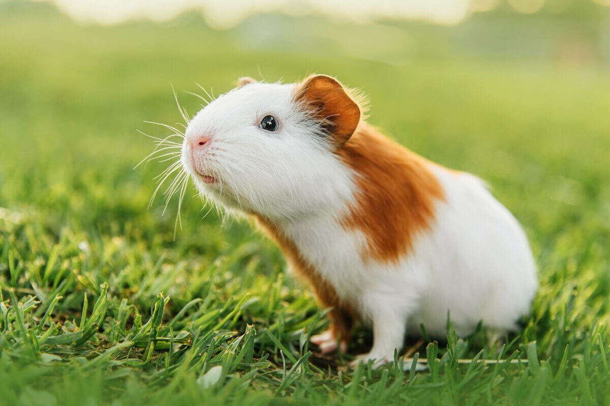

Porquinho da índia
Nome científico: (Cavia porcellus Linnaeus, 1758)
Nome comum: Porquinho da índia.
Classificação biológica:
Domínio: Eukaryota.
Reino: Animalia.
Filo: Chordata.
Classe: Mammalia.
Ordem: Rodentia.
Família: Caviidae.
Gênero: Cavia.
Espécie: Cavia porcellus.
Nutrição: Herbívoro.
Hábitos alimentares: Alimenta-se de vegetais, frutas, folhas e feno.
Morfologia do corpo: Pequeno roedor de corpo compacto, sem cauda visível, pelagem variada e orelhas arredondadas. Mede entre 20 e 30 cm e pesa de 700 g a 1,2 kg.
Comportamento: Animal social, vive em grupos e comunica-se por meio de vocalizações. Ativo principalmente durante o dia.
Principais Alimentos: Vegetais, frutas, folhas e feno.
Principais Predadores: Aves de rapina, cobras e pequenos carnívoros.
Locais habitados
Distribuição:Não é encontrado em biomas naturais como um animal selvagem.
Habitat: Encontrado em cativeiro, viveiros e criações domésticas.
Reprodução: A gestação dura cerca de 59 a 72 dias, com ninhadas de 1 a 6 filhotes, que nascem bem desenvolvidos e independentes.